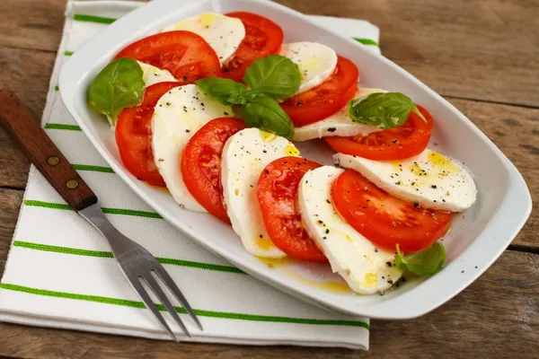
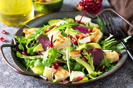

Салат з тунцем
Калорії: 300 калорій
Інгредієнти:
- 1 банка тунця в олії
- 2 варених яйця
- 100 г вареної картоплі
- 100 г моркви
- 1 цибуля
- Оливкова олія для заправки
- Сіль та перець за смаком
Інструкція:
- Відкрити банку з тунцем та зливати олію.
- Відварити яйця та нарізати їх кубиками.
- Варити картоплю та моркву, потім нарізати кубиками.
- Все змішати в одній великій мисці.
- Додати сіль, перець і оливкову олію за смаком.

Томати з моцарелою
Калорії: 200 ккал
Інгредієнти:
- 2 середніх помідори
- 100 г моцарели
- Базилік за смаком
- Оливкова олія, бальзамічний оцет
- Сіль, перець
Інструкція:
- Наріж помідори та моцарелу.
- Розклади на тарілці, чергуючи помідори та моцарелу.
- Полий оливковою олією та бальзамічним оцтом, посоли та поперчи.
- Посип базиліком та подавай.

Курячий салат з авокадо
Калорії: 350 калорій
Інгредієнти:
- 1 куряче філе (відварене або запечене)
- 1 стиглий авокадо
- 100 г огірків
- 1 помідор
- 50 г червоної цибулі
- 1 ст. л. грецького йогурту або оливкової олії
- Сіль та перець за смаком
- Лимонний сік (за бажанням)
Інструкція:
- Нарізати відварене або запечене куряче філе кубиками.
- Авокадо очистити від шкірки, видалити кісточку та нарізати шматочками.
- Огірки та помідори порізати кубиками, цибулю – півкільцями.
- Усі інгредієнти змішати у великій мисці.
- Додати грецький йогурт або оливкову олію, посолити, поперчити, за бажанням додати трохи лимонного соку.
- Все ретельно перемішати і подавати до столу.